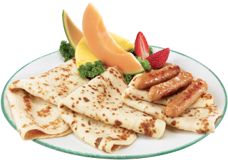

Crêpes
3 belles crêpes de farine blanche ou de farine de sarrasin-sorgho servies avec l’accompagnement de votre choix : bacon, saucisses, saucisses de dinde, jambon ou fruits frais.
Aussi offert en portion réduite.